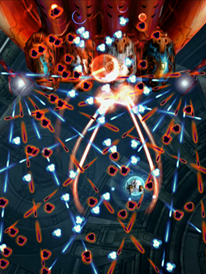
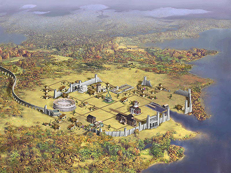

Qu’appelle-t-on un jeu « parfait » ? Souvent, quand on dit qu'une chose est parfaite, on veut dire qu'elle est meilleure que tout le reste, que toutes les autres choses de sa catégorie lui sont inférieures. Et dans ce cas, il est risqué de décrire quoi que ce soit comme parfait, parce que n’importe qui peut vous contredire, ne serait-ce que sur la base de goûts personnels. N’importe qui peut vous répondre qu’il préfère un autre jeu et que votre jeu « parfait » ne peut donc pas l’être. La notion de perfection, dans le langage courant, implique une notion de reconnaissance universelle. Mais je voudrais discuter de la notion de jeu parfait dans une acception légèrement différente du terme. La première définition de « parfait » dans mon American Heritage Dictionary est :
Auquel ne manque rien qui soit essentiel à l’ensemble ; complet dans son genre.
La définition quatre donne par ailleurs :
Complètement adapté à une situation ou à un but précis.
Si l’on suit ces définitions, je pense que Tetris est un jeu parfait, pour des raisons évidentes : il est impossible d’ajouter ou d’enlever quoi que ce soit au gameplay de Tetris sans perturber son élégante simplicité – même s’il y a d’autres jeux auxquels on peut préférer jouer [NDT : nous vous recommandons l'excellente vidéo de Matthewmatosis sur le sujet.]. Mais ce n’est pas de Tetris dont je voudrais parler dans cet article.
Lire la suite
ou
les 3 commentaires

Nouvelle année, nouvelle liste d'erreurs de game design. J'ai reçu énormément de courrier et j'ai hâte d'en recevoir plus. J'ai tellement de travail en ce moment que je ne peux pas tester tous les jeux auxquels je voudrais jouer, c'est pourquoi, fidèles lecteurs, je compte chaque année sur vos contributions afin de trouver ceux qui sont mal conçus.
Lire la suite
Le mois dernier [NDT : c'est-à-dire dans l'article précédent], j'ai jeté un œil à la façon dont les dispositifs narratifs impactent la rejouabilité d'un jeu. Cette fois-ci, j'examinerai comment la rejouabilité est impactée par les mécaniques de jeux elles-mêmes.

De façon évidente, la contribution la plus importante à la rejouabilité d'un jeu, c'est sa jouabilité. Si un jeu est mal équilibré, si son interface utilisateur est mauvaise, s'il semble lui manquer des fonctionnalités essentielles, alors ce ne sera pas très amusant d'y jouer, et encore moins d'y rejouer. Mais il y a des considérations plus spécifiques qui entrent en ligne de compte dans la rejouabilité d'un jeu, et c'est de celles-ci que je vais parler ici.
Lire la suite
ou
les 2 commentaires
Qu'est-ce qui fait qu'un jeu est rejouable ? Et pourquoi certains jeux sont rejouables alors que d'autres non ?

En principe, n'importe quel jeu devrait être rejouable. Imaginons que vous alliez au magasin de jouets, que vous achetiez un jeu de société pour vingt ou trente dollars et qu'une fois arrivé chez vous, vous vous rendiez compte que vous ne pouvez y jouer qu'une seule fois : vous seriez légitimement furieux. Pourtant, ceci arrive assez souvent avec les jeux vidéo et nos clients s'y sont plus ou moins résignés. La rejouabilité, cependant, n'est pas le résultat du hasard : il s'agit de quelque chose que nous concepteurs pouvons créer volontairement… si nous le souhaitons.
Lire la suite
ou
les 3 commentaires
Quand j'ai écrit le premier article de la série « Vilain Game Designer ! Pas de biscuit pour toi ! » il y a plus de dix ans, ce n'était rien de plus qu'une liste de choses qui m'agaçaient personnellement – sitôt publié, sitôt oublié. Je n'aurais jamais imaginé que mes lecteurs prendraient cela avec tant de sérieux et qu'ils seraient si motivés pour proposer leurs propres exemples.

Après l'article de l'année dernière, j'ai reçu un paquet de nouvelles suggestions de joueurs et de développeurs frustrés. Voici donc neuf nouvelles TDC [NDT : Twinkie Denial Conditions, littéralement « condition pour refuser un biscuit », à savoir à un game designer qui a mal fait son travail] pour cette neuvième édition de la série « Vilain Game Designer ! Pas de biscuit pour toi » !
Lire la suite
ou
les 2 commentaires
« Ce sont nos choix, Harry, bien plus que que nos capacités, qui déterminent qui nous sommes vraiment. »
-- Albus Dumbledore, Harry Potter et la chambre des secrets.

Il y a quelques temps, j’ai été engagé par un studio pour travailler comme consultant sur un jeu de tir qui proposait plusieurs fins. A la lecture des documents de game design, je me suis rendu compte que celles-ci étaient toutes aussi sombres les unes que les autres. J’ai dit aux designers que les jeux de tir grand public ne sont pas des romans de Kafka et que les joueurs qui parviendraient à la fin d’un tel jeu estimeraient avoir droit à au moins une fin modérément positive. Et ils en ont tenu compte.
Lire la suite
ou
les 5 commentaires
Une fois de plus, le moment est venu pour une nouvelle édition annuelle de Vilain Game Designer ! Pas de biscuit pour toi ! Depuis l'année dernière, j'ai reçu une bonne quantité de Twinkie Denial Conditions (NDT : littéralement « condition pour refuser un biscuit », à savoir à un game designer qui a mal fait son travail) de mes lecteurs, que je vous présente maintenant, pour votre éducation et surtout pour votre plaisir. De plus, j'ai finalement tenu une vieille promesse : mettre en place une base de données rassemblant tous les TDC, triés par catégorie. Il vous suffit de cliquer sur le lien pour vous retrouver sur mon site Internet.

Et c'est reparti ! Certains d'entre eux sont tellement énormes que j'aurai vraiment dû en parler des années plus tôt.
Lire la suite
ou
les 2 commentaires
Attention, spoiler ! Cet article dévoile certains éléments du film Matrix, bien que jusqu'à ce samedi soir, j'étais probablement la seule personne dans le monde occidental qui ne l'avait pas encore vu. Il est donc peu probable que ceci gâchera le plaisir de mes lecteurs.

Nous, les développeurs de jeux vidéo, nous adorons les films sur les ordinateurs, surtout s'ils parlent de réalité virtuelle et autres concepts cools dans le même genre, alors j'ai pensé que je ferais mieux de regarder Matrix. Après tout, je me suis précipité pour aller voir Tron au cinéma quand il est sorti, et ceci s'est avéré être une expérience fascinante. Non ? Vous n'avez pas adoré cette scène où Bruce Boxleitner embrasse passionnément… un programme informatique ? Je vous l'accorde, elle ressemblait à une femme, mais le film explique sans ambiguïté qu'il s'agit d'un morceau de code. Bon, j'admets qu'à l'occasion, j'ai moi-même été tenté, après m'être débarrassé d'un bug particulièrement vicieux dans mon code, de donner à mon moniteur un petit bisou, une petite bise de rien du tout pour célébrer ma victoire. Mais je n'ai jamais vraiment pensé à rouler une pelle à un sous-programme et franchement, j'ai du mal à imaginer ce que Bruce Boxleitner a pu retirer de cette expérience.
Lire la suite
ou
les 6 commentaires
À l'aube de l'industrie du jeu, il y avait des jeux vidéo (sur console ou arcade) et des jeux sur ordinateur. Avec les jeux vidéo, vous vous retrouviez directement dans le grand bain : seul face à une horde d'ennemis avec très peu d'instructions, soit vous couliez soit vous nagiez. La plupart du temps vous couliez, ce qui constituait par ailleurs la source de revenus des salles d'arcade.

Les jeux sur ordinateur étaient plus complexes que les jeux d'arcade, c'est pourquoi des manuels étaient fournis aux joueurs avant de commencer à jouer. De nos jours, on s'attend à ce que les joueurs ne lisent pas le manuel, du coup, il leur faut un tutoriel à la place. Les tutoriels présentent au joueur l'interface et le gameplay. Ils doivent expliquer au joueur comment interagir dans l'univers du jeu, comment atteindre l'objectif principal, et (brièvement) pourquoi.
Lire la suite
ou
les 4 commentaires
Nous savons tous que l'industrie du jeu vidéo souffre d'un important turn over: des débutants enthousiastes rentrent dans le monde du business ; les conditions de travail et les longues heures les poussent à bout ; ils finissent par démissionner pour trouver une occupation plus saine et de nouvelles recrues arrivent, toutes prêtes à se faire exploiter à leur place. Mis à part la vie et le talent gâchés que cela représente, ceci signifie que les studios de jeux vidéo n'ont pas de mémoire institutionnelle, et c'est en partie pour ça que nous continuons à faire des erreurs de conceptions.

D'un autre côté, ça me donne de quoi écrire quelque chose chaque année ! Je vous présente Vilain Game Designer ! Pas de biscuit pour toi ! VII. Cette liste de TDC annuelle [NDT : Twinkie Denial Condition, littéralement, condition pour refuser un biscuit, à savoir à un mauvais game designer)] est, malheureusement, longue, et comme d'habitude, m'a été envoyée par vous, mes fidèles lecteurs. Si vous voulez m'en envoyer un peu plus, écrivez à notwinkie@designersnotebook.com [NDT : en anglais]. En attendant, c'est parti.
Lire la suite
ou
les 3 commentaires